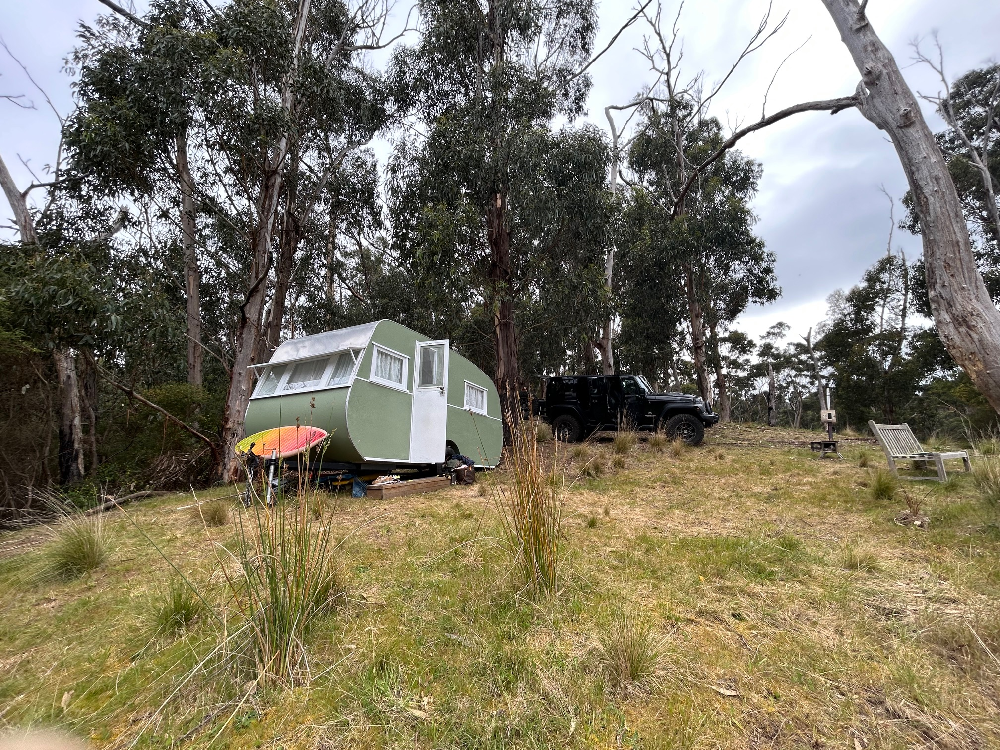
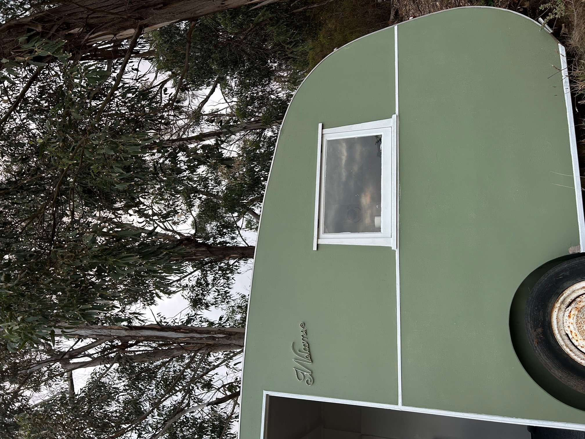
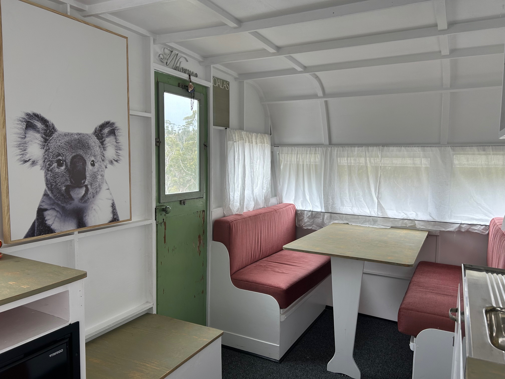
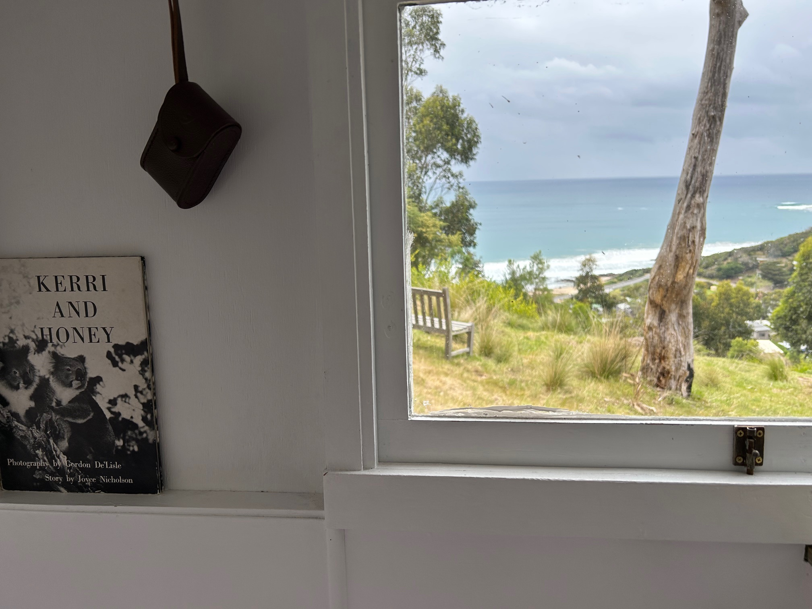
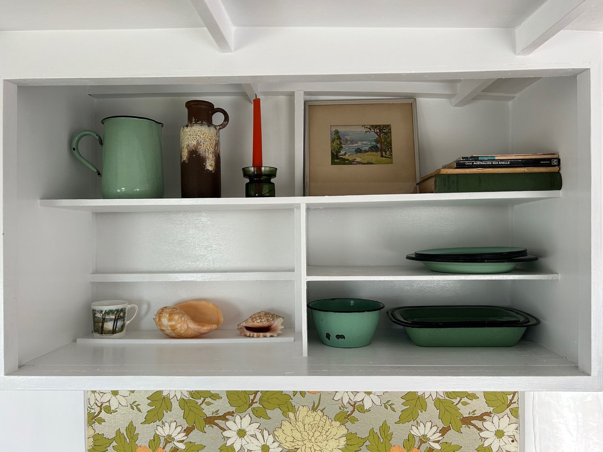

Landholding
Seven acres of bushland
A protected Rural Conservation site with dense vegetation, wildlife presence, and a strong sense of seclusion.
A unique off-grid field stay within a lovingly restored 1940s bondwood caravan, set across seven acres of protected bushland at Separation Creek on Victoria’s Great Ocean Road. Coastal views, forest bathing, wildlife, and quiet immersion in a rare bushland corridor between township and National Park.

This unique landholding sits approximately 150 kilometres west of Melbourne at Separation Creek, just 22 kilometres from Lorne along the Great Ocean Road. Set across seven acres of Rural Conservation land, it offers a quieter and more intimate experience of the coast.
The sanctuary forms an important corridor between the National Park and the township of Separation Creek, allowing native life to move through the landscape with relative freedom.
Dense bushland, ocean air, and the steady presence of wildlife shape the atmosphere of the site. Kangaroos, wallabies, and koalas are part of the living fabric of the place.
It is not simply accommodation, but a field stay within a functioning landscape — quiet, restorative, and deeply connected to place.

At the centre of the stay is a lovingly restored 1940s bondwood caravan. Its historic character has been carefully retained, allowing the warmth, patina, and intimacy of the original structure to remain present.
The experience is intentionally modest in scale yet rich in feeling — a retreat shaped by texture, memory, and proximity to the surrounding bush.
Heritage shelter within a living ecological corridor.
The experience here is shaped by the landscape itself. Mornings arrive through the trees. Bird calls carry across the site. Light moves slowly through dense bushland, and the presence of the ocean is always nearby. This is a place for forest bathing, walking, resting, reading, and settling into a slower rhythm.
A chance to slow down through stillness, scent, air, and the sensory depth of the bush.
Kangaroos, wallabies, koalas, birds, and insects remain part of the daily life of the sanctuary.
A rare combination of bush, coast, and seclusion along one of Victoria’s most iconic landscapes.
Caravan, bushland, atmosphere, and the wider character of the sanctuary.



The place, the position, and the feeling of staying there.
A protected Rural Conservation site with dense vegetation, wildlife presence, and a strong sense of seclusion.
Situated between the National Park and Separation Creek township, the sanctuary forms part of a larger ecological movement corridor.
A quiet, design-led accommodation experience shaped by simplicity, restoration, and closeness to the natural world.
Couples, solo retreats, restorative weekends, writers, designers, and anyone wanting a more intimate relationship with place.
The field stay forms part of the broader Gardener & Son world — restoration, stewardship, and the cultivation of meaningful ecological places.
The sanctuary is located at Separation Creek, approximately 150 kilometres west of Melbourne and 22 kilometres from Lorne along the Great Ocean Road.
11 Dollar Track
Separation Creek
Victoria, Australia
If the private property gate along Dollar Track is closed, please open and re-close it. Always leave a gate the way you found it.
Past the large concrete water tank on your left, you will see the first chain gate on your left-hand side. There is a hand-painted sign on the chain that says private property.
This is the first of two driveways. Walk up this driveway to access the caravan. At the top, turn left and walk down towards the ocean to the caravan, following the car tracks.
Enquiries are open. This can remain as the enquiry point until a direct booking link is connected.
Airbnb, direct booking, or a dedicated Gardener & Son booking page can be linked here later.
For stay enquiries, collaborations, or broader conversations around the sanctuary — get in touch.
Gardens • Objects • Stories
Melbourne, Australia